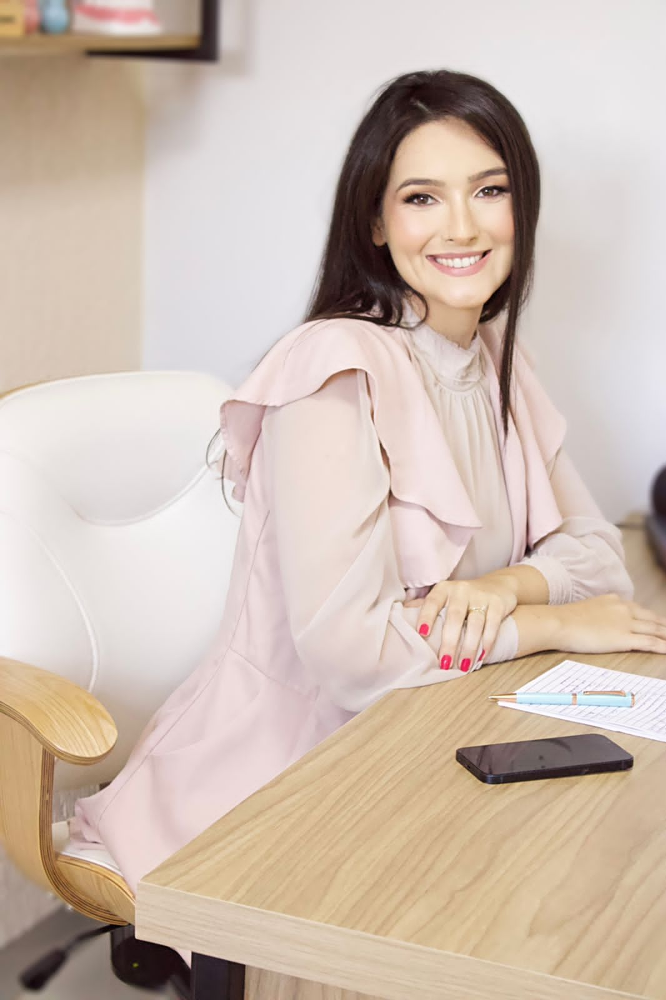
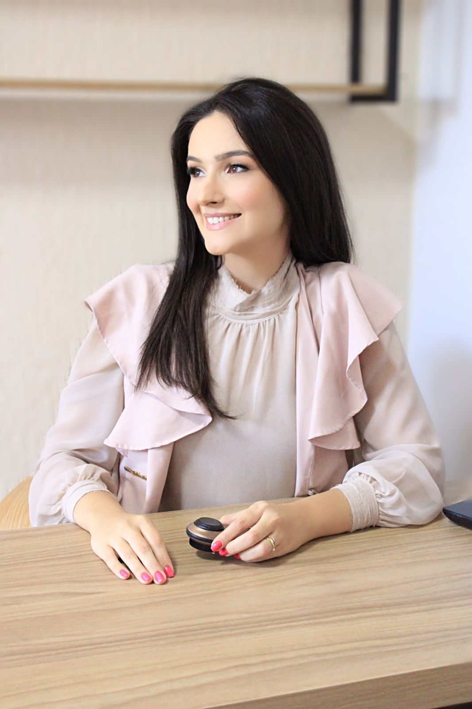

Graduação em Medicina
Formação médica com base técnica sólida e olhar integral para o cuidado do paciente.

Dra. Julia Benedetti
Acredito que a verdadeira beleza não reside na transformação radical, mas na curadoria cuidadosa do que já é intrinsecamente seu. Como médica dermatologista, minha abordagem afasta-se da padronização e abraça a exclusividade de cada rosto.
Minha jornada acadêmica foi pautada pela busca incessante da excelência técnica, mas foi a sensibilidade artística que lapidou minha prática. Vejo a pele não apenas como um órgão, mas como uma tela que reflete nossa história, saúde e emoções.
Meu propósito é atuar como uma curadora estética, selecionando e aplicando as intervenções mais precisas e elegantes para realçar sua luz natural, promovendo um envelhecimento sofisticado e sereno.
JBFundação de Excelência
Formação médica com base técnica sólida e olhar integral para o cuidado do paciente.
Aprimoramento clínico com foco em cuidado continuado, escuta e atenção centrada no paciente.
Treinamento técnico aprofundado com foco em precisão diagnóstica, segurança clínica e tratamentos dermatológicos.
Aprimoramento em cosmiatria, injetáveis e protocolos voltados à naturalidade e sofisticação dos resultados.
Vivência Clínica
Atuação clínica em dermatologia com atendimento contínuo e acompanhamento de diferentes perfis de pacientes.
Experiência em contexto assistencial urbano, conciliando precisão diagnóstica e condutas individualizadas.
Participação no ensino e troca acadêmica voltada à formação e atualização em dermatologia.
Atuação dermatológica em atendimento público, ampliando acesso ao cuidado especializado e acompanhamento clínico.
Filosofia
Cada consulta começa com escuta. Entender desejos, rotina e referências pessoais é o primeiro passo para construir um plano coerente, individualizado e elegante.
Não se trata de fórmulas prontas, mas de intervenções cuidadosamente escolhidas para valorizar proporções, textura, luminosidade e identidade.
